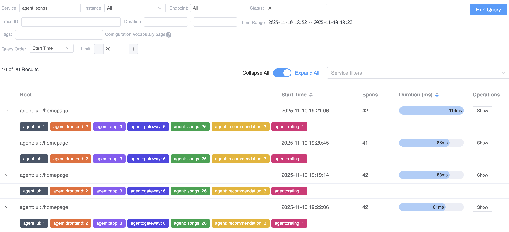
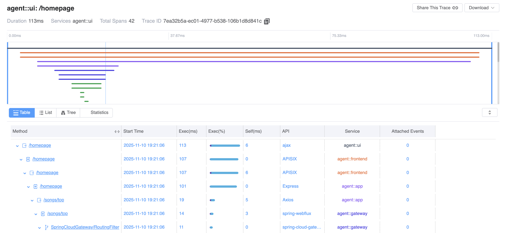

SkyWalking 10.3.0 is released. Go to downloads page to find release tars.
New Trace Model in BanyanDB
Optimized the Trace model implementation for BanyanDB 0.9.0, significantly reducing query frequency between OAP and BanyanDB. Introduced new query views based on the latest query features, greatly reducing page latency.


Project
- Bump up BanyanDB dependency version(server and java-client) to 0.9.0.
- Fix CVE-2025-54057, restrict and validate url for widgets.
- Fix
MetricsPersistentWorker, remove DataCarrier queue fromHour/Daydimensions metrics persistent process. This is important to reduce memory cost andHour/Daydimensions metrics persistent latency. - [Break Change] BanyanDB: support new Trace model.
OAP Server
- Implement self-monitoring for BanyanDB via OAP Server.
- BanyanDB: Support
hot/warm/coldstages configuration. - Fix query continues profiling policies error when the policy is already in the cache.
- Support
hot/warm/coldstages TTL query in the status API and graphQL API. - PromQL Service: traffic query support
limitand regex match. - Fix an edge case of HashCodeSelector(Integer#MIN_VALUE causes ArrayIndexOutOfBoundsException).
- Support Flink monitoring.
- BanyanDB: Support
@ShardingKeyfor Measure tags. - BanyanDB: Support cold stage data query for metrics/traces/logs.
- Increase the idle check interval of the message queue to 200ms to reduce CPU usage under low load conditions.
- Limit max attempts of DNS resolution of Istio ServiceEntry to 3, and do not wait for first resolution result in case the DNS is not resolvable at all.
- Support analysis waypoint metrics in Envoy ALS receiver.
- Add Ztunnel component in the topology.
- [Break Change] Change
componentIdtocomponentIdsin the K8SServiceRelation Scope. - Adapt the mesh metrics if detect the ambient mesh in the eBPF access log receiver.
- Add JSON format support for the
/debugging/config/dumpstatus API. - Enhance status APIs to support multiple
acceptheader values, e.g.Accept: application/json; charset=utf-8. - Storage: separate
SpanAttachedEventRecordfor SkyWalking trace and Zipkin trace. - [Break Change]BanyanDB: Setup new Group policy.
- Bump up commons-beanutils to 1.11.0.
- Refactor: simplify the
Accepthttp header process. - [Break Change]Storage: Move
eventfrom metrics to records. - Remove string limitation in Jackson deserializer for ElasticSearch client.
- Fix
disable.oaldoes not work. - Enhance the stability of e2e PHP tests and update the PHP agent version.
- Add component ID for the
damengJDBC driver. - BanyanDB: Support custom
TopN pre-aggregationrules configuration in filebydb-topn.yml. - refactor: implement OTEL handler with SPI for extensibility.
- chore: add
toStringimplementation forStorageID. - chore: add a warning log when connecting to ES takes too long.
- Fix the query time range in the metadata API.
- OAP gRPC-Client support
Health Check. - [Break Change]
health_check_xxmetrics make response 1 represents healthy, 0 represents unhealthy. - Bump up grpc to 1.70.0.
- BanyanDB: support new Index rule type
SKIPPING/TREE, and update the recordlog’strace_idindexType toSKIPPING - BanyanDB: remove
index-onlyfrom tag setting. - Fix analysis tracing profiling span failure in ES storage.
- Add UI dashboard for Ruby runtime metrics.
- Tracing Query Execution HTTP APIs: make the argument
service layeroptional. - GraphQL API: metadata, topology, log and trace support query by name.
- [Break Change] MQE function
sort_valuessorts according to the aggregation result and labels rather than the simple time series values. - Self Observability: add
metrics_aggregation_queue_used_percentageandmetrics_persistent_collection_cached_sizemetrics for the OAP server. - Optimize metrics aggregate/persistent worker: separate
OALandMALworkers and consume pools. The dataflow signal drives the new MAL consumer, the following table shows the pool size, driven mode and queue size for each worker.
| Worker | poolSize | isSignalDrivenMode | queueChannelSize | queueBufferSize |
|---|---|---|---|---|
| MetricsAggregateOALWorker | Math.ceil(availableProcessors * 2 * 1.5) | false | 2 | 10000 |
| MetricsAggregateMALWorker | availableProcessors * 2 / 8, at least 1 | true | 1 | 1000 |
| MetricsPersistentMinOALWorker | availableProcessors * 2 / 8, at least 1 | false | 1 | 2000 |
| MetricsPersistentMinMALWorker | availableProcessors * 2 / 16, at least 1 | true | 1 | 1000 |
- Bump up netty to 4.2.4.Final.
- Bump up commons-lang to 3.18.0.
- BanyanDB: support group
replicasanduser/passwordfor basic authentication. - BanyanDB: fix Zipkin query missing tag
QUERY. - Fix
IllegalArgumentException: Incorrect number of labels, tags in theLogReportServiceHTTPHandlerandLogReportServiceGrpcHandlerinconsistent withLogHandler. - BanyanDB: fix Zipkin query by
annotationQuery - HTTP Server: Use the default shared thread pool rather than creating a new event loop thread pool for each server. Remove the
MAX_THREADSfrom each server config. - Optimize all Armeria HTTP Server(s) to share the
CommonPoolsfor the whole JVM. In theCommonPools, the max threads forEventLoopGroupisprocessor * 2, and forBlockingTaskExecutoris200and can be recycled if over the keepAliveTimeMillis (60000L by default). Here is a summary of the thread dump without UI query in a simple Kind env deployed by SkyWalking showcase:
| Thread Type | Count | Main State | Description |
|---|---|---|---|
| JVM System Threads | 12 | RUNNABLE/WAITING | Includes Reference Handler, Finalizer, Signal Dispatcher, Service Thread, C2/C1 CompilerThreads, Sweeper thread, Common-Cleaner, etc. |
| Netty I/O Worker Threads | 32 | RUNNABLE | Threads named “armeria-common-worker-epoll-*”, handling network I/O operations. |
| gRPC Worker Threads | 16 | RUNNABLE | Threads named “grpc-default-worker-*”. |
| HTTP Client Threads | 4 | RUNNABLE | Threads named “HttpClient-*-SelectorManager”. |
| Data Consumer Threads | 47 | TIMED_WAITING (sleeping) | Threads named “DataCarrier.*”, used for metrics data consumption. |
| Scheduled Task Threads | 10 | TIMED_WAITING (parking) | Threads named “pool--thread-”. |
| ForkJoinPool Worker Threads | 2 | WAITING (parking) | Threads named “ForkJoinPool-*”. |
| BanyanDB Processor Threads | 2 | TIMED_WAITING (parking) | Threads named “BanyanDB BulkProcessor”. |
| gRPC Executor Threads | 3 | TIMED_WAITING (parking) | Threads named “grpc-default-executor-*”. |
| JVM GC Threads | 13 | RUNNABLE | Threads named “GC Thread#*” for garbage collection. |
| Other JVM Internal Threads | 3 | RUNNABLE | Includes VM Thread, G1 Main Marker, VM Periodic Task Thread. |
| Attach Listener | 1 | RUNNABLE | JVM attach listener thread. |
| Total | 158 | - | - |
- BanyanDB: make
BanyanDBMetricsDAOoutputscan all blocksinfo log only when the model is notindexModel. - BanyanDB: fix the
BanyanDBMetricsDAO.multiGetnot work properly inIndexMode. - BanyanDB: remove
@StoreIDAsTag, and automatically create a virtual String tagidfor the SeriesID inIndexMode. - Remove method
appendMutantfrom StorageID. - Fix otlp log handler response error and otlp span convert error.
- Fix service_relation source layer in mq entry span analyse.
- Fix metrics comparison in promql with bool modifier.
- Add rate limiter for Zipkin trace receiver to limit maximum spans per second.
- Open
health-checkermodule by default due to latest UI changes. Change the default check period to 30s. - Refactor Kubernetes coordinator to be more accurate about node readiness.
- Bump up netty to 4.2.5.Final.
- BanyanDB: fix log query missing order by condition, and fix missing service id condition when query by instance id or endpoint id.
- Fix potential NPE in the
AlarmStatusQueryHandler. - Aggregate TopN Slow SQL by service dimension.
- BanyanDB: support add group prefix (namespace) for BanyanDB groups.
- BanyanDB: fix when setting
@BanyanDB.TimestampColumn, the column should not be indexed. - OAP Self Observability: make Trace analysis metrics separate by label
protocol, add Zipkin span dropped metrics. - BanyanDB: Move data write logic from BanyanDB Java Client to OAP and support observe metrics for write operations.
- Self Observability: add write latency metrics for BanyanDB and ElasticSearch.
- Fix the malfunctioning alarm feature of MAL metrics due to unknown metadata in L2 aggregate worker.
- Make MAL percentile align with OAL percentile calculation.
- Update Grafana dashboards for OAP observability.
- BanyanDB: fix query
getInstanceby instance ID. - Support the go agent(0.7.0 release) bundled pprof profiling feature.
- Service and TCPService source support analyze TLS mode.
- Library-pprof-parser: feat: add PprofSegmentParser.
- Storage: feat: add languageType column to ProfileThreadSnapshotRecord.
- Feat: add go profile analyzer
- Get Alarm Runtime Status: support query the running status for the whole cluster.
UI
- Implement self-monitoring for BanyanDB via UI.
- Enhance the trace
List/Tree/Tablegraph to support displaying multiple refs of spans and distinguishing different parents. - Fix: correct the same labels for metrics.
- Refactor: use the Fetch API to instead of Axios.
- Support cold stage data for metrics, trace and log.
- Add route to status API
/debugging/config/dumpin the UI. - Implement the Status API on Settings page.
- Bump vite from 6.2.6 to 6.3.6.
- Enhance async profiling by adding shorter and custom duration options.
- Fix select wrong span to analysis in trace profiling.
- Correct the service list for legends in trace graphs.
- Correct endpoint topology data to avoid undefined.
- Fix the snapshot charts unable to display.
- Bump vue-i18n from 9.14.3 to 9.14.5.
- Fix split queries for topology to avoid page crash.
- Self Observability ui-template: Add new panels for monitor
metrics aggregation queue used percentageandmetrics persistent collection cached size. - test: introduce and set up unit tests in the UI.
- test: implement comprehensive unit tests for components.
- refactor: optimize data types for widgets and dashboards.
- fix: optimize appearing the wrong prompt by pop-up for the HTTP environments in copy function.
- refactor the configuration view and implement the optional config for displaying timestamp in Log widget.
- test: implement unit tests for hooks and refactor some types.
- fix: share OAP proxy services for different endpoints and use health checked endpoints group.
- Optimize buttons in time picker component.
- Optimize the router system and implement unit tests for router.
- Bump element-plus from 2.9.4 to 2.11.0.
- Adapt new trace protocol and implement new trace view.
- Implement Trace page.
- Support collapsing and expanding for the event widget.
- UI-template: add BanyanDB and Elasticsearch write latency dashboards for OAP self observability.
Documentation
- BanyanDB: Add
Data Lifecycle Stages(Hot/Warm/Cold)documentation. - Add
SWIP-9 Support flink monitoring. - Fix
Metrics Attributesmenu link. - Implement the Status API on Settings page.
- Fix: Add the prefix for http url.
- Enhance the async-profiling duration options.
- Enhance the TTL Tab on Setting page.
- Fix the snapshot charts in alarm page.
- Fix
Fluent Bitdead links.
All issues and pull requests are here